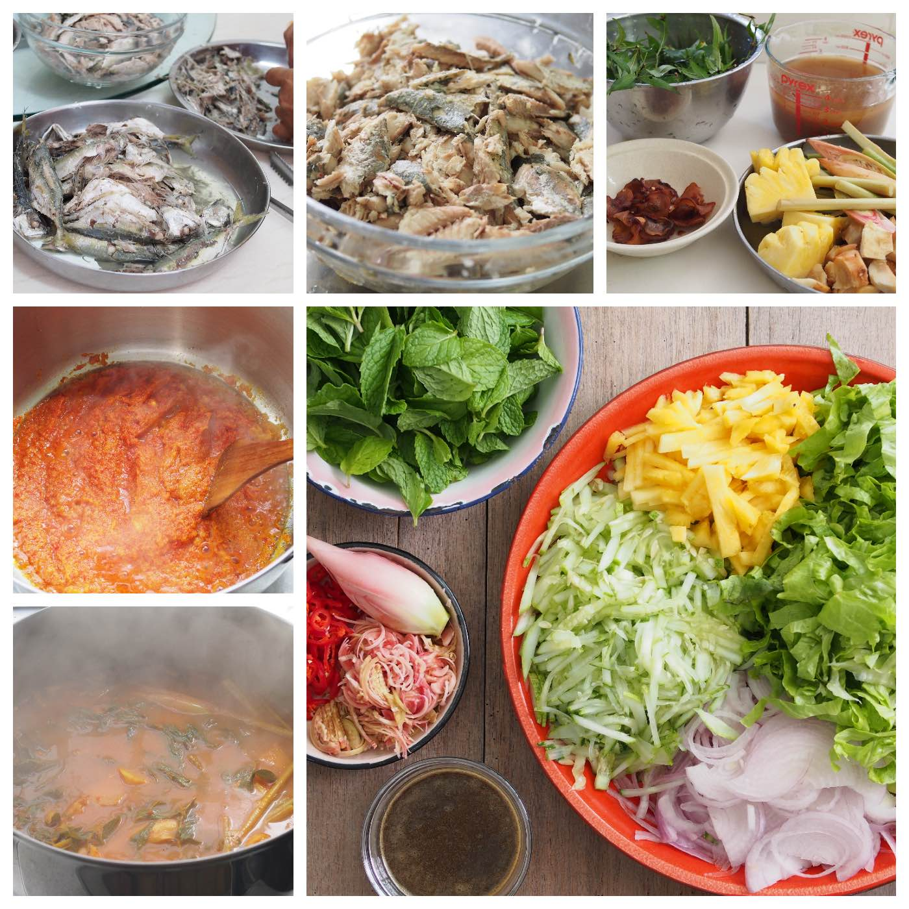
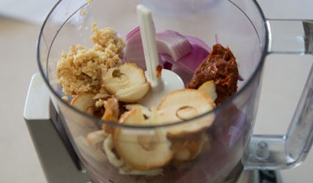
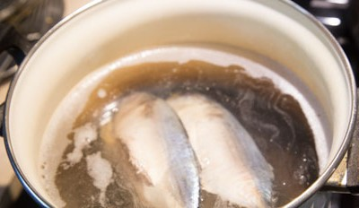

Asam Laksa Recipe
Ingredients:
- 500 gram mackerel fish (or canned sardines)
- 500 gram thick rice noodles
- 10 cups water
- 3 stalks lemongrass
- 5 pieces asam gelugur
- 50 gram tamarind paste
- 1 tablespoon shrimp paste
- 3 pieces dried bunga kencong
- sugar and salt
- 100 gram red chilies
- 150 gram shallots
- 25 gram garlic and galangal
- 1 cucumber, ginger flower, purple onion and lime
- 1 bunch of fresh mint leaves

Instructions:
- Ground all the spices and herbs and add a bit of water to help it going to prepare for ground spices.

- Bring 10 cups of water to boil and lower the heat to medium low to let the mackerel fish simmer for 10
minutes.

- After that, seperate the fish meat and bone. Save the bones and head.

- Then, add the ground spices and herbs, fish bones and the rest of the ingredients for soup base.

- Bring it to a boil and then lower the heat, cover the pot with a lid and let it simmer for 30 minutes. Then,
strain the stock and discard all the solids. Stir the flaked fish meat back into the soup and season it.

- Finally, served the noodles, fish and soup into a bowl. Top it with sliced cucumber, sliced onion, mint leaves
and finely chopped ginger flower plus squeezing some lime juice.

← Back to Recipes